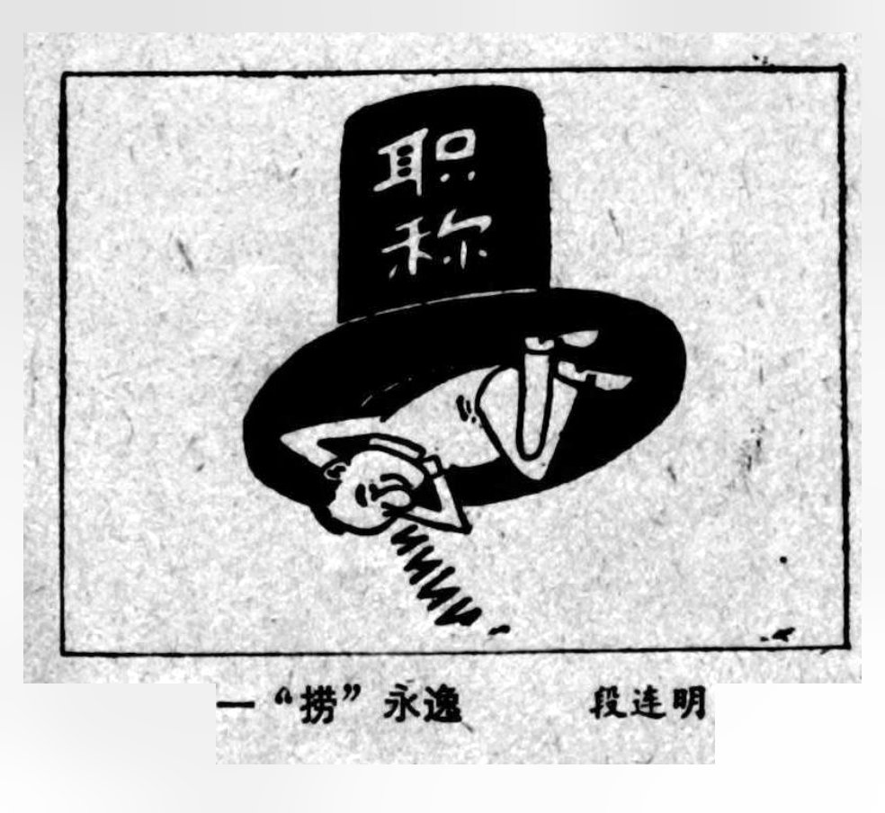

段连明 《人事》1989年第9期（总第48期），第39页
一“捞”永逸
Grab It Once, Settled for Good
- Text in the drawing
- 职称
Professional title - Description
- An enormous black top hat labeled “professional title” almost swallows the small, grinning man wearing it, who bounces along on a coiled spring.
- Note
- 一劳永逸, “one effort, lasting ease,” becomes 一捞永逸 with 捞, “to grab”: once a professional title is secured it is held for life.
- Artist
- Duan Lianming 段连明
- Published in
- 《人事》1989年第9期（总第48期）, p. 39
- Themes
- Diplomas and credentials · Promotion

Cite
Duan Lianming, “一“捞”永逸” [Grab It Once, Settled for Good], Renshi (Personnel) 《人事》, 1989, no. 9, p. 39.